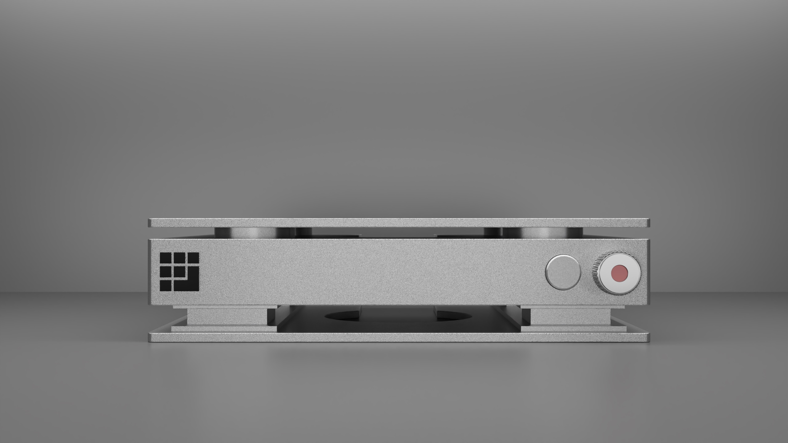
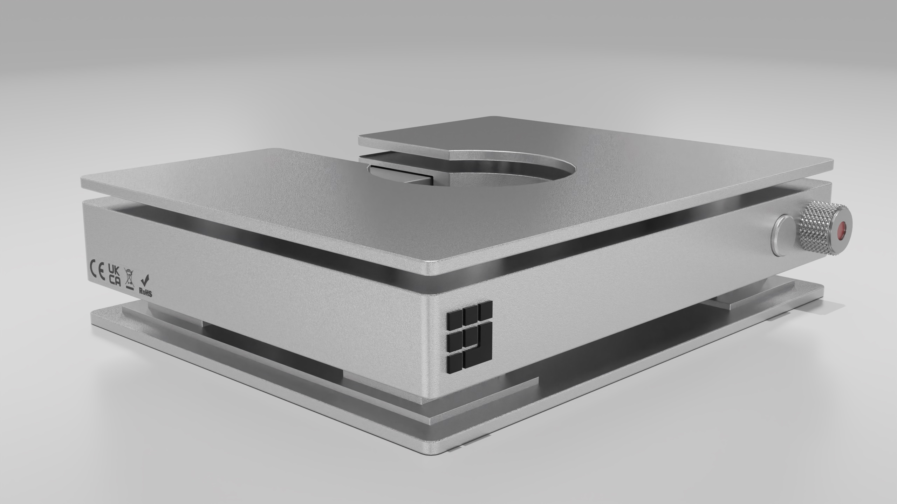
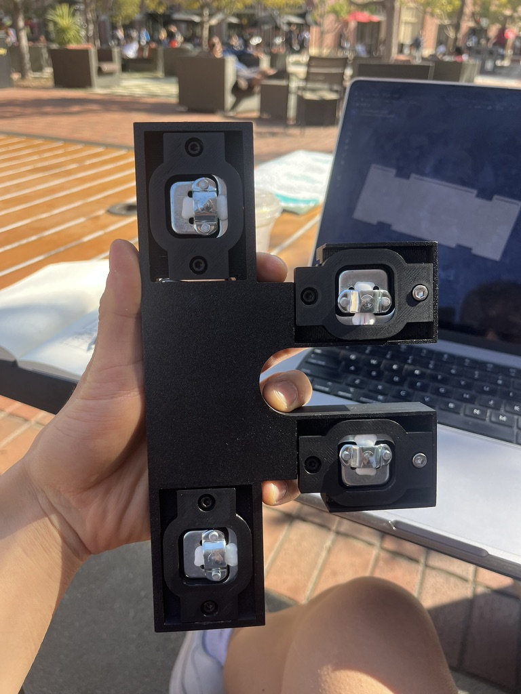
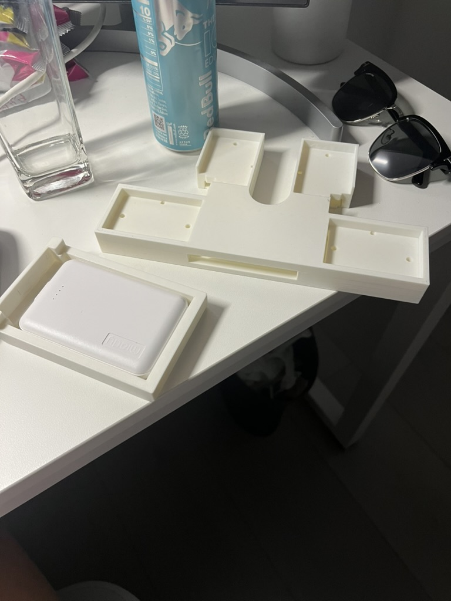

UNIT is the an automatic fitness tracking ecosystem that autonomously tracks your workouts through the use of sensors retrofitted to gym machines. To put it simply, we saw a gap in the fitness tech market that was underserved. On one side you have fitness apps where you manually input data and and get ranked based off of consistency and how much you lift. The problem with this is that manual data input is unreliable and unreliable data and the freedom to manually input data simply destroys the whole ranked gym model. On the other side you have wearables and other hardware that have the ability to track user data. The current wearables market is flawed because they lack the data set required to accurately identify exercises and they are focussed mainly on cardio.
I built a minimalistic design language, keeping the hardware design as simple but elegant as possible. Prior to designing 3D renders I sketched out a couple of designs mainly inspired by Apple and Teenage Engineering. I used Blender to model, texture, and render these models.




After building/rendering out the physical product in Blender I worked in Figma to prototype wireframes of the app component. My goal was to make a user experience where the user would be able to see their gym progress as easily as possible. A user would also be able to see the amount of PRs the did, workout streak, and their fitness club association.


I used Fusion 360 and USC's 3D printers to develop prototypes for the weight scale and IMU. Our design used an ESP 32 and 4 load cell sensors for our weight scale.

